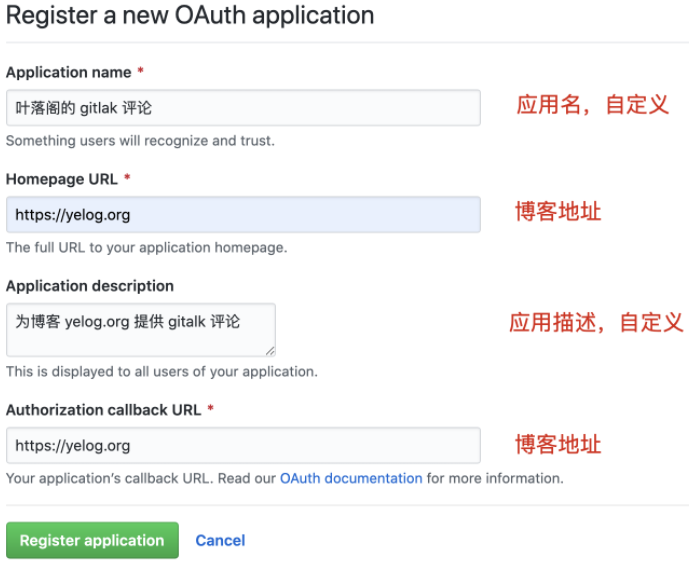
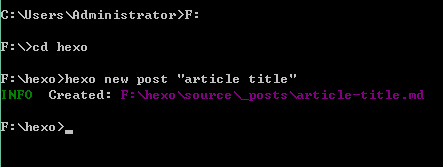

# 1. 确认电脑安装过 git, nodeJS
# git install
鼠标右击有 git GUI 和 git Bash 选项，随便新建一个文件夹，进入。
git config --global user.email "<your-email-address>@qq.com" | |
git config --global user.name "<your-user-name>" |
# nodeJS install
- 在使用之前，先类掌握 3 个东西，明白它们是用来干什么的：
npm: nodejs 下的包管理器。
webpack: 它主要用途是通过 CommonJS 的语法把所有浏览器端需要发布的静态资源作相应的准备，比如资源的合并和打包。
vue-cli: 用户生成 Vue 工程模板。（帮你快速开始一个 vue 的项目，也就是给你一套 vue 的结构，包含基础的依赖库，只需要 npm install 就可以安装。
nodejs 下载网址：https://nodejs.org/en/ 【如果嫌下载的慢，可以下载其他网站上的，别人有现成的，下载的比较快】
部署此博客用的 nodeJS 版本连接: https://nodejs.org/dist/latest-v13.x/
node-v13.14.0-x64.msi下载好后，双击安装
中途有个选择安装路径
接下去一路 “next”，最后点击 finish
# npm 配置 proxy 和镜像源
首先查看下目前配置:
npm config list查看是否已经配置了设置网络代理的命令如下:
npm config set proxy="http://<proxy>:<port>"
经过上面设置使用了 http 开头的源，因此不需要设 https_proxy 了，否则还要增加一句:
npm config set https-proxy http://<proxy>:<port> |
取消代理:
npm config delete proxy | |
npm config delete https-proxy |
- 国外源速度不稳定，可设置国内淘宝源。查看现有源:
npm config get registry
Note: 外企配置上面相应 proxy 后可以不用配置国内淘宝源，配置淘宝源后反而更慢.
https://registry.npmjs.org/ --> https://registry.npm.taobao.org/ |
4. 设置淘宝源: npm config set registry https://registry.npm.taobao.org
5. 再次查看即可确认源已修改。用新源更新一波: npm update
# npm 配置包下载包保存路径
- 首先你可以使用 cmd 命令进行查看当前电脑的 npm 安装路径。
npm config ls |
- 在要保存的路径下创建两个文件夹：
D:\***\node_global_modules\ | |
D:\***\node_cache\ |
- 添加好目录后 执行以下代码：
npm config set prefix "D:\***\node_global_modules\" | |
npm config set cache "D:\***\node_cache\" |
- 修改环境变量
在 path 中追加修改
D:\***\node_cache\ | |
D:\***\node_global_modules\ |
- 测试，重新打开一个 cmd 命令行，安装一个插件试试，执行
npm install cordova -g // -g意思是安装到全局目录下 |
安装完毕后打开设置的安装路径看下是否成功
在你设置的目录 node_global_modules 中出现要下载的文件夹则表示设置成功
# 升级 hexo
npm i hexo-cli -g
# 2. 以管理员身份打开 cmd， cd 到当前目录
npm install -g hexo-cli | |
npm install hexo-deployer-git --save | |
hexo init |
在 public 目录下可看到我们自己书写的博客文档（.md 文件）
# 3. 生成网页浏览
hexo g |
默认地址是 localhost:4000, 浏览器输入此链接即可看到默认样式
# 4. 选择主题，Hexo 可随时使用、更换博客主题
Hexo 官方主题网页
其中一个主题
git clone https://github.com/yelog/hexo-theme-3-hexo.git themes/3-hexo |
下载项目至博客项目下的 themes 目录中，文件夹命名为 3-hexo，并在博客配置文件_config.yml 中指定使用该主题：
修改 hexo 根目录的_config.yml 文件，如下
theme: 3-hexo
更新:
cd themes/3-hexo | |
git pull |
# 5. 配置 SSH 密钥
ssh-keygen -t rsa -C "1041618918@qq.com" | |
cat ~/.ssh/id_rsa.pub //C:\Users\yazhanma\.ssh\id_rsa.pub |
复制内容添加到 github ->settings->SSH and GPG keys-> add SSH key, 名字随便取.
此时安装网上说的测试命令 #ssh -T git@github.com 是否能连接上，自己试了试不行仍然 time out，但是不影响估计是得等一段时间才行，仍然继续下面步骤部署成功.
修改博客配置文件_config.yml
deploy:
type: git
repo: https://github.com/Kung-Fu-Master/Kung-Fu-Master.github.io
// 如果执行$hexo d后出现一个错误但还是部署成功, 可以将路径改成以下ssh格式就不会执行$hexo d命令后出错, 但是部署速度超级慢
// repo: git@github.com:Kung-Fu-Master/Kung-Fu-Master.github.io.git
branch: master
# 6. 发布到 GitHub
hexo g | |
hexo d |
完成后，就有属于自己的博客了，在 github 的 setting 中 可以看到自己的博客地址。
https://kung-fu-master.github.io
如果文章没更新，对于 chrome 浏览器
第一种方法：可以选择等待一会时间再查看
第二种方法：点击地址栏右侧的菜单按钮 -> 更多工具 -> 清除浏览数据 -> 清除数据 再刷新就可看到文章已更新
# 7. 配置评论系统
目前 3-hexo 已经集成了评论系统有 gitalk 、gitment、 disqus 、来必力、utteranc
7.1 登录 github ，注册应用
点击进行注册

注册完后，可得到 Client ID 和 Client Secret .
7.2 因为 gitalk 是基于 Github 的 Issue 的，所以需要指定一个仓库，用来承接 gitalk 的评论，我们一般使用 Github Page 来做我们博客的评论，所以，新建仓库名为 xxx.github.io，其中 xxx 为你的 Github 用户名
gitalk 官网: https://gitalk.github.io/
7.3 配置主题
在主题下 _config.yml 中找到如下配置，启用评论，并使用 gitalk.
########## 评论设置 #############
comment:
on: true
type: gitalk
在主题下 _config.yml 中找到 gitalk 配置，将 第 1 步 得到的 Client ID 和 Client Secret 复制到如下位置
gitalk:
githubID: # 填你的 github 用户名
repo: xxx.github.io # 承载评论的仓库，一般使用 Github Page 仓库
ClientID: # 第 7.1 步获得 Client ID
ClientSecret: # 第 7.1 步获得 Client Secret
adminUser: # Github 用户名
distractionFreeMode: true
language: zh-CN
perPage: 10
# 8. 开启字数统计
开启此功能需先安装插件，在 hexo 根目录 (博客的目录，没有 package.json 文件的话会自动生成), 执行 $ npm i hexo-wordcount --save
修改 _config.yml
word_count: true
# 写博客、发布文章
新建一篇博客，执行下面的命令，或者自己手动创建 *.md 文件，后缀名一定要是 ".md".
hexo new post "article title" |

\source\ _posts 将会看到 article title.md 文件
用 MarDown 编辑器打开就可以编辑文章了。文章编辑好之后，运行生成、部署命令:
hexo g // 生成 | |
hexo d // 部署 |
当然你也可以执行下面的命令，相当于上面两条命令的效果
hexo d -g #在部署前先生成 |
部署成功后访问 你的地址，https://yourName.github.io (这里输入我的地址:https://Kung-Fu-Master.github.io), 将可以看到生成的文章。
# 踩坑提醒
- 注意需要提前安装一个扩展：
npm install hexo-deployer-git --save |
如果没有执行者行命令，将会提醒: deloyer not found:git
- 如果出现下面这样的错误
Permission denied (publickey).
fatal: Could not read from remote repository.
Please make sure you have the correct access rights
and the repository exists.
则是因为没有设置好 public key 所致。
在本机生成 public key, 不懂的可以参考我的这一篇博客 Git ssh 配置及使用